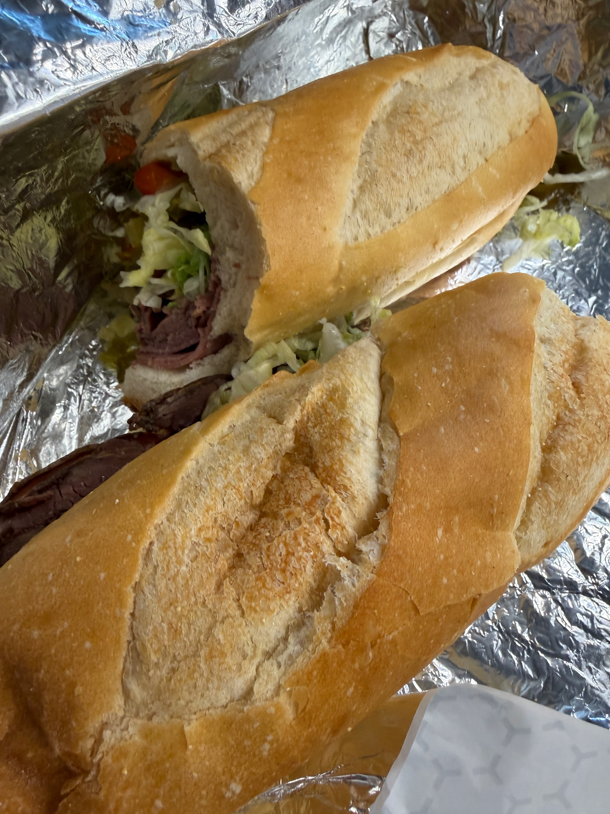
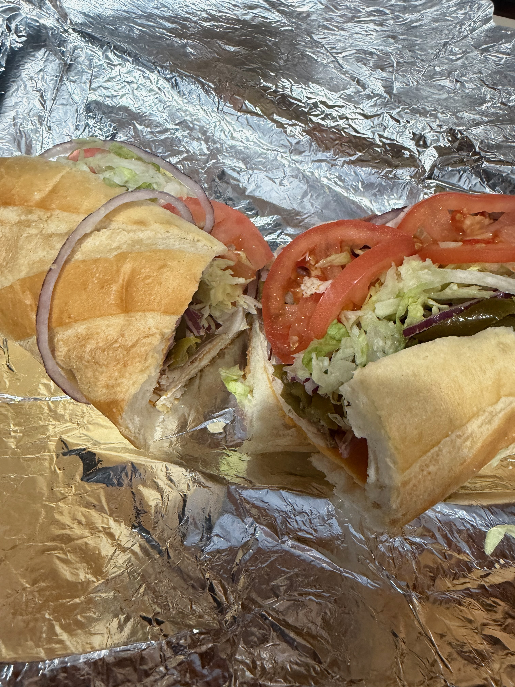
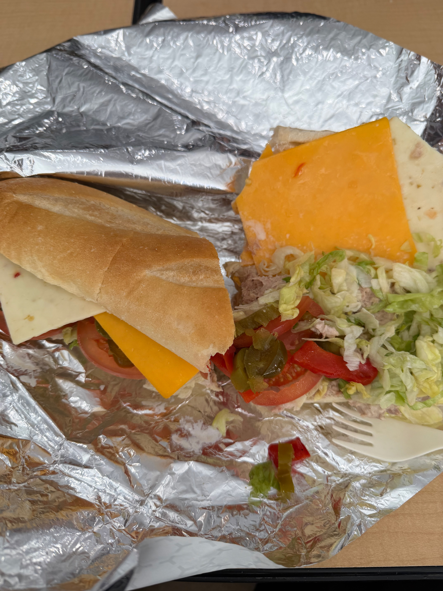
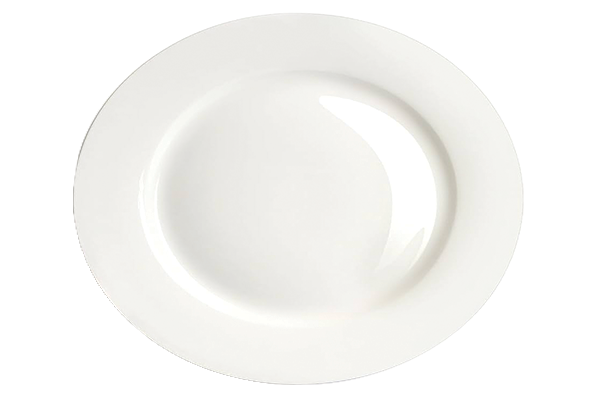

How do you identify your mood right now?
Choose one mood from the index to start your emotional path.
How do you feel when you are looking at the sandwich?



Try to build your sandwich
Add what you like; then go to the receipt when you are ready.
On your plate

Add layers from bottom to top. Each ingredient shows as a clear band; older layers sit lower, newest on top.
Now look at your sandwich and identify your mood
Your sandwich
How do you feel now that you built it?
Emotional Volatility Receipt
Review your path and open a printable receipt window if needed.
Captured every second
Time taken in completion
--:--
The timer starts at first mood selection and ends at receipt view.